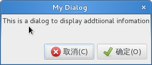
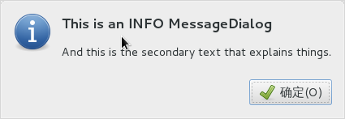
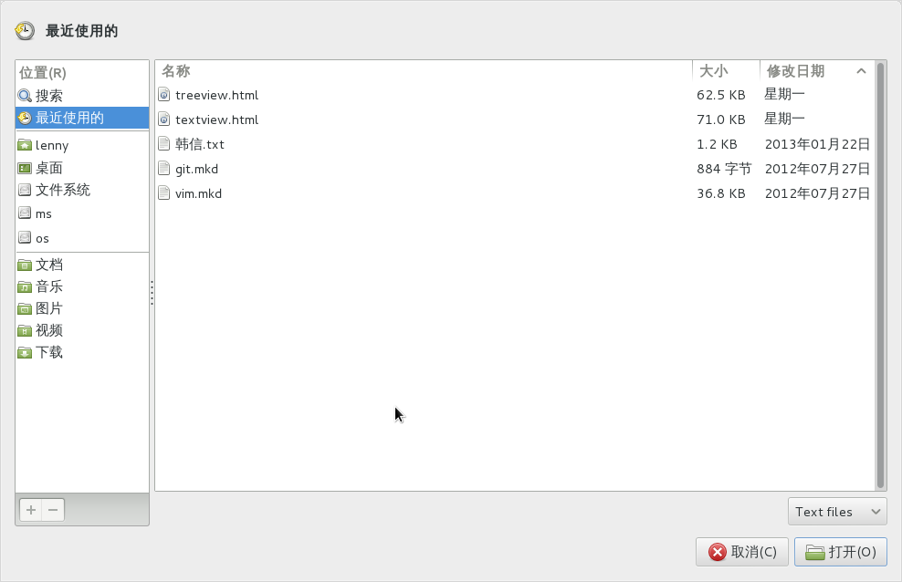

对话框（Dialog）¶
对话框窗口与标准的窗口非常相似，用来向用户显示信息或者从用户那里获取信息，例如 通常用于提供一个首选项窗口。对话框主要的不同是一些预打包好的控件自动布局在窗口中。 我们可以简单地添加标签label、按钮、复选按钮等等，另一个很大的不同是响应的处理， 控制应用在用户与对话框的交互之后如何处理。
有很多你可能会觉得很有用的派生的对话框。 Gtk.MessageDialog 用于绝大多数
的提示信息。但是其他的时候你肯呢个需要派生你自己的对话框类来提供更加复杂的功能。
自定义对话框¶
要打包控件到一个自定义的对话框，你应该把他们打包到一个 Gtk.Box 中，可以
通过 Gtk.Dialog.get_content_area() 获取box。要简单的添加一个按钮到对话框的
底部，你可以使用 Gtk.Dialog.add_button() 。
可以通过 Gtk.Dialog.set_modal 或者在 Gtk.Dialog 的构造函数的
flag 参数上包含 Gtk.DialogFlags.MODAL 创建 ‘模态’ 对话框
（即会冻结对应用其他部分的反应）。
点击按钮会触发一个 “response” 信号，如果你想要阻塞等待对话框返回后再执行你的
控制流程，你可以调用 Gtk.Dialog.run() ，该方法返回一个整型，可能是
Gtk.ResponseType ，也可能是你在 Gtk.Dialog 的构造函数或
Gtk.Dialog.add_button() 方法中自定义的返回值。
最后，有两种方法可以删除对话框， Gtk.Widget.hide() 从视图中移除对话框，但是
该对话框仍然在内存中，这通常在后边仍然需要显示的对话框很有用，可以阻止对此构造。
Gtk.Widget.destroy() 方法则会在你不需要对话框时从内存中删除它，注意如果在
销毁后如果需要再次访问该对话框你必须重新构造，否则对话框窗口是空的。
Dialog 对象¶
-
class
Gtk.Dialog([title[, parent[, flags[, buttons]]])¶ 创建一个新的
Gtk.Dialog，标题设置为 title 并将临时的父窗口设置为 parent 。 flags 参数可以用来设置对话框为模态(Gtk.DialogFlags.MODAL) 和/或 设置为与其父窗口一起销毁(Gtk.DialogFlags.DESTROY_WITH_PARENT) 。buttons 为可以提供一个按钮和响应的不同按钮的元组。详情参考
add_button()。所有参数都是可选的，也可以用作key-word关键字参数。
-
get_content_area()¶ 返回对话框的内容区域。
根据给定的文本添加一个按钮(或者是stock button，如果 button_text 为 stock item)，并设置当点击按钮时会触发 “响应” 信号 并传递 response_id ，按钮会被添加都对话框活动区域的最后。
response_id 可以为任何正整数或者以下
Gtk.ResponseType预定义的值：Gtk.ResponseType.NONEGtk.ResponseType.REJECTGtk.ResponseType.ACCEPTGtk.ResponseType.DELETE_EVENTGtk.ResponseType.OKGtk.ResponseType.CANCELGtk.ResponseType.CLOSEGtk.ResponseType.YESGtk.ResponseType.NOGtk.ResponseType.APPLYGtk.ResponseType.HELP
创建的按钮控件会被返回，但通常用不到。
添加多个按钮到对话框，使用传递的按钮数据参数。本方法与重复调用
add_button()方法一样。按钮数据对——按钮文本(或者 stock item ) 和响应id是分别传递的，例如:dialog.add_buttons(Gtk.STOCK_OPEN, 42, "Close", Gtk.ResponseType.CLOSE)
-
set_modal(is_modal)¶ 设置对话框为模态或非模态。模态对话框用户与应用程序的其他窗口交互。
-
Example¶
1 2 3 4 5 6 7 8 9 10 11 12 13 14 15 16 17 18 19 20 21 22 23 24 25 26 27 28 29 30 31 32 33 34 35 36 37 38 39 40 41 42 43 44 | from gi.repository import Gtk
class DialogExample(Gtk.Dialog):
def __init__(self, parent):
Gtk.Dialog.__init__(self, 'My Dialog', parent, 0,
(Gtk.STOCK_CANCEL, Gtk.ResponseType.CANCEL,
Gtk.STOCK_OK, Gtk.ResponseType.OK))
self.set_default_size(150, 100)
label = Gtk.Label('This is a dialog to display addtiional infomation')
box = self.get_content_area()
box.add(label)
self.show_all()
class DialogWindow(Gtk.Window):
def __init__(self):
Gtk.Window.__init__(self, title='Dialog Example')
self.set_border_width(6)
button = Gtk.Button('Open dialog')
button.connect('clicked', self.on_button_clicked)
self.add(button)
def on_button_clicked(self, widget):
dialog = DialogExample(self)
response = dialog.run()
if response == Gtk.ResponseType.OK:
print 'The OK button was clicked'
elif response == Gtk.ResponseType.CANCEL:
print 'The Cancel button was clicked'
dialog.destroy()
win = DialogWindow()
win.connect('delete-event', Gtk.main_quit)
win.show_all()
Gtk.main()
|
消息对话框¶
Gtk.MessageDialog 是一个便利类，用于创建简单的，标准的消息对话框，带有
一个消息，一个图标，及用于用户响应的按钮。你可以在 Gtk.MessageDialog 的
构造函数中指定消息和文本的类型，也可以指定标准的按钮。
有一些对话框需要更多的描述到底发生了什么，此时可以添加次要的文本信息。这时创建
消息对话框时指定的主要的文本信息会设置为更大并为粗体。次要的消息可以通过
Gtk.MessageDialog.format_secondary_text() 指定。
MessageDialog 对象¶
-
class
Gtk.MessageDialog([parent[, flags[, message_type[, buttons, [message_format]]]])¶ 创建一个新的
Gtk.MessageDialog，将临时的父窗口设置为 parent 。 flags 参数可以用来设置对话框为模态(Gtk.DialogFlags.MODAL) 和/或 设置为与其父窗口一起销毁(Gtk.DialogFlags.DESTROY_WITH_PARENT) 。message_type 可以设置为以下之一：
Gtk.MessageType.INFO: 提示消息Gtk.MessageType.WARNING: 非致命警告信息Gtk.MessageType.QUESTION: 需要用户选择的问题消息Gtk.MessageType.ERROR: 致命的错误Gtk.MessageType.OTHER: 非以上的，不会获取图标
也可以给消息对话框设置多种的按钮，来从用户获取不同的响应，可以使用以下值之一：
Gtk.ButtonsType.NONE: 没有按钮Gtk.ButtonsType.OK: 确定按钮Gtk.ButtonsType.CLOSE: 关闭按钮Gtk.ButtonsType.CANCEL: 取消按钮Gtk.ButtonsType.YES_NO: 是和否按钮Gtk.ButtonsType.OK_CANCEL: 确定和取消按钮
最后， message_format 是用户要看到的文本信息。
所有参数都是可选的，也可以用作key-word关键字参数。
-
format_secondary_text(message_format)¶ 设置消息对话框的次要文本信息为 message_format 。
注意设置次要文本会使主要的文本(
Gtk.MessageDialog构造函数的 message_format 参数)变为粗体，除非你提供了明确的标记。
Example¶
1 2 3 4 5 6 7 8 9 10 11 12 13 14 15 16 17 18 19 20 21 22 23 24 25 26 27 28 29 30 31 32 33 34 35 36 37 38 39 40 41 42 43 44 45 46 47 48 49 50 51 52 53 54 55 56 57 58 59 60 61 62 63 64 65 66 67 68 69 70 71 72 | from gi.repository import Gtk
class MessageDialogWindow(Gtk.Window):
def __init__(self):
Gtk.Window.__init__(self, title='MessageDialog Example')
box = Gtk.Box(spacing=6)
self.add(box)
button1 = Gtk.Button('Infomation')
button1.connect('clicked', self.on_info_clicked)
box.add(button1)
button2 = Gtk.Button('Error')
button2.connect('clicked', self.on_error_clicked)
box.add(button2)
button3 = Gtk.Button('Warning')
button3.connect('clicked', self.on_warn_clicked)
box.add(button3)
button4 = Gtk.Button('Question')
button4.connect('clicked', self.on_question_clicked)
box.add(button4)
def on_info_clicked(self, widget):
dialog = Gtk.MessageDialog(self, 0, Gtk.MessageType.INFO,
Gtk.ButtonsType.OK, 'This is an INFO MessageDialog')
dialog.format_secondary_text('And this is the secondary text that explains things.')
dialog.run()
print 'INFO dialog closed'
dialog.destroy()
def on_error_clicked(self, widget):
dialog = Gtk.MessageDialog(self, 0, Gtk.MessageType.ERROR,
Gtk.ButtonsType.OK, 'This is an ERROR MessageDialog')
dialog.format_secondary_text('And this is the secondary text that explains things.')
dialog.run()
print 'ERROR dialog closed'
dialog.destroy()
def on_warn_clicked(self, widget):
dialog = Gtk.MessageDialog(self, 0, Gtk.MessageType.WARNING,
Gtk.ButtonsType.OK_CANCEL, 'This is an WARNING MessageDialog')
dialog.format_secondary_text('And this is the secondary text that explains things.')
response = dialog.run()
if response == Gtk.ResponseType.OK:
print 'WARN dialog closed by clicking OK button'
elif response == Gtk.ResponseType.CANCEL:
print 'WARN dialog closed by clicking CANCEL button'
dialog.destroy()
def on_question_clicked(self, widget):
dialog = Gtk.MessageDialog(self, 0, Gtk.MessageType.QUESTION,
Gtk.ButtonsType.YES_NO, 'This is an QUESTION MessageDialog')
dialog.format_secondary_text('And this is the secondary text that explains things.')
response = dialog.run()
if response == Gtk.ResponseType.YES:
print 'QUESTION dialog closed by clicking YES button'
elif response == Gtk.ResponseType.NO:
print 'QUESTION dialog closed by clicking NO button'
dialog.destroy()
win = MessageDialogWindow()
win.connect('delete-event', Gtk.main_quit)
win.show_all()
Gtk.main()
|
文件选择对话框¶
Gtk.FileChooserDialog 用于 “文件/打开” 或者 “文件/保存” 菜单项很合适。
对于文件选择对话框你可以使用所有 Gtk.FileChooser 和 Gtk.Dialog 的方法。
当创建 Gtk.FileChooserDialog 时你需要定义对话框的目的：
- 要选择一个用于打开的问，用于文件/打开命令，使用
Gtk.FileChooserAction.OPEN- 要第一次保存一个文件，用于文件/保存命令，使用
Gtk.FileChooserAction.SAVE， 并使用Gtk.FileChooser.set_current_name()指定一个建议的名字例如 “Untitled”- 要保存一个文件为不同的名字，用于文件/另存为命令，使用
Gtk.FileChooserAction.SAVE，并且通过Gtk.FileChooser.set_filename()设置已存在的文件的名字。- 要选择一个文件夹而不是文件，使用
Gtk.FileChooserAction.SELECT_FOLDER.
Gtk.FileChooserDialog 继承自 Gtk.Dialog ，因此按钮也有响应id如
Gtk.ResponseType.ACCEPT 和 Gtk.ResponseType.CANCEL ，这些也都可以
在 Gtk.FileChooserDialog 的构造函数中指定。与 Gtk.Dialog 类似，
你可以使用自定义的响应id，文件选择对话框应该至少包含以下id的按钮之一：
Gtk.ResponseType.ACCEPTGtk.ResponseType.OKGtk.ResponseType.YESGtk.ResponseType.APPLY
当用户完成文件的选择，你的程序可以获取选择的文件的文件名(Gtk.FileChooser.get_filename())
或者URI(Gtk.FileChooser.get_uri()) 。
默认 Gtk.FileChooser 一次只允许选择一个文件，要使用多选可以调用
Gtk.FileChooser.set_select_multiple() 。获取选择的文件的列表可以使用
Gtk.FileChooser.get_filenames() 或者 Gtk.FileChooser.get_uris() 。
Gtk.FileChooser 也支持各种选项使得文件和目录更加的可配置和访问。
Gtk.FileChooser.set_local_only(): 只有本地文件可以选择。Gtk.FileChooser.show_hidden(): 显示隐藏文件。Gtk.FileChooser.set_do_overwrite_confirmation(): 如果文件选择对话框 被配置为Gtk.FileChooserAction.SAVE模式，当用户输入的文件名已存在 时，会显示一个确认对话框。
另外，你可以通过创建 Gtk.FileFilter 对象并调用 Gtk.FileChooser.add_filter()
来指定显示那些类型的文件。用户可以在文件选择对话框的底部的组合框选择添加的过滤器。
of the file chooser.
FileChooser 对象¶
-
class
Gtk.FileChooserDialog([title[, parent[, action[, buttons]]])¶ 创建一个新的
Gtk.FileChooserDialog并设置标题为 title ，临时的父窗口 为 parent 。action 可以为一下之一：
Gtk.FileChooserAction.OPEN: 只允许用回选择一个已经存在的文件。Gtk.FileChooserAction.SAVE: 允许用户使用一个已经存在的文件的名字或者输入一个新的文件名。Gtk.FileChooserAction.SELECT_FOLDER: 允许用户选择一个已经存在的目录。Gtk.FileChooserAction.CREATE_FOLDER: 允许用户命名一个新的或已经存在的目录。
buttons 参数与
Gtk.Dialog的格式一样。
-
class
Gtk.FileChooser¶ -
set_current_name(name)¶ 设置文件选择框当前文件的名字，就像用户输入的一样。
-
set_filename(filename)¶ 设置 filename 为文件选择框当前的文件名，改变到文件的父目录并选择列表中的 文件，其他的文件都不会被选择。 如果选择器为
Gtk.FileChooserAction.SAVE模式，文件的基本名页会显示 在对话框文件名输入框。注意文件必须存在，否则除了改变目录其他什么也不做。
-
set_select_multiple(select_multiple)¶ 设置可以选择多个文件，只在
Gtk.FileChooserAction.OPEN模式或Gtk.FileChooserAction.SELECT_FOLDER有效。
-
set_local_only(local_only)¶ 设置是否只可以选择本地文件。
设置是否显示隐藏的文件和目录。
-
set_do_overwrite_confirmation(do_overwrite_confirmation)¶ 设置在保存模式是否提示覆盖。
-
get_filename()¶ 返回文件选择框当前选中的文件的名字。如果选中了多个文件，请使用
get_filenames()代替。
-
get_filenames()¶ 返回在当前文件夹选中的文件和子目录的列表。返回的名字是绝对路径，如果当前 目录的文件不是本地文件则会被忽略，要获取请使用
get_uris()来代替。
-
get_uri()¶ 返回文件选择框当前选中的文件的URI。如果多个文件被选中，请使用
get_uris()代替。
-
get_uris()¶ 返回当前目录选中的所有文件和子目录的列表，返回的名字是完整的URI。
-
add_filter(filter)¶ 添加
Gtk.FileFilter的实例 filter 到用户可以选择的过滤器列表。 当过滤器被选中时只有通过过滤器的文件才会被显示。
-
Example¶
1 2 3 4 5 6 7 8 9 10 11 12 13 14 15 16 17 18 19 20 21 22 23 24 25 26 27 28 29 30 31 32 33 34 35 36 37 38 39 40 41 42 43 44 45 46 47 48 49 50 51 52 53 54 55 56 57 58 59 60 61 62 63 64 65 66 67 68 69 70 71 | from gi.repository import Gtk
class FileChooserWindow(Gtk.Window):
def __init__(self):
Gtk.Window.__init__(self, title="FileChooser Example")
box = Gtk.Box(spacing=6)
self.add(box)
button1 = Gtk.Button("Choose File")
button1.connect("clicked", self.on_file_clicked)
box.add(button1)
button2 = Gtk.Button("Choose Folder")
button2.connect("clicked", self.on_folder_clicked)
box.add(button2)
def on_file_clicked(self, widget):
dialog = Gtk.FileChooserDialog("Please choose a file", self,
Gtk.FileChooserAction.OPEN,
(Gtk.STOCK_CANCEL, Gtk.ResponseType.CANCEL,
Gtk.STOCK_OPEN, Gtk.ResponseType.OK))
self.add_filters(dialog)
response = dialog.run()
if response == Gtk.ResponseType.OK:
print "Open clicked"
print "File selected: " + dialog.get_filename()
elif response == Gtk.ResponseType.CANCEL:
print "Cancel clicked"
dialog.destroy()
def add_filters(self, dialog):
filter_text = Gtk.FileFilter()
filter_text.set_name("Text files")
filter_text.add_mime_type("text/plain")
dialog.add_filter(filter_text)
filter_py = Gtk.FileFilter()
filter_py.set_name("Python files")
filter_py.add_mime_type("text/x-python")
dialog.add_filter(filter_py)
filter_any = Gtk.FileFilter()
filter_any.set_name("Any files")
filter_any.add_pattern("*")
dialog.add_filter(filter_any)
def on_folder_clicked(self, widget):
dialog = Gtk.FileChooserDialog("Please choose a folder", self,
Gtk.FileChooserAction.SELECT_FOLDER,
(Gtk.STOCK_CANCEL, Gtk.ResponseType.CANCEL,
"Select", Gtk.ResponseType.OK))
dialog.set_default_size(800, 400)
response = dialog.run()
if response == Gtk.ResponseType.OK:
print "Select clicked"
print "Folder selected: " + dialog.get_filename()
elif response == Gtk.ResponseType.CANCEL:
print "Cancel clicked"
dialog.destroy()
win = FileChooserWindow()
win.connect("delete-event", Gtk.main_quit)
win.show_all()
Gtk.main()
|